Part 0: Calibrating Your Camera and Capturing a 3D Scan
Part 0.1: Calibrating Your Camera
I took 40 photos of the ArUco calibration tags.
I used my phone camera so there wouldn't be any distortion due to the lens.
I took the photos from many angles and distances, but kept the zoom level consistent.
I downsized the photos to a reasonable resolution.
Here's one example of a photo:
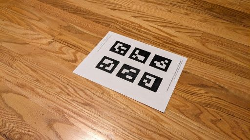
An example ArUco tag photo
I detected the ArUco tags in each image using OpenCV's ArUco detector.
From the detection, I matched all detected corners with their 3D world coordinates.
I used OpenCV's calibrateCamera to compute the camera's intrinsics and distortion coefficients.
There were a few images which had no detected tags, so I excluded them from the dataset.
Part 0.2: Capturing a 3D Object Scan
I took 40 photos of my object next to one ArUco tag from various angles, making sure the tag could be seen in each one.
I used the same settings as the calibration, and downsized them to the same resolution.
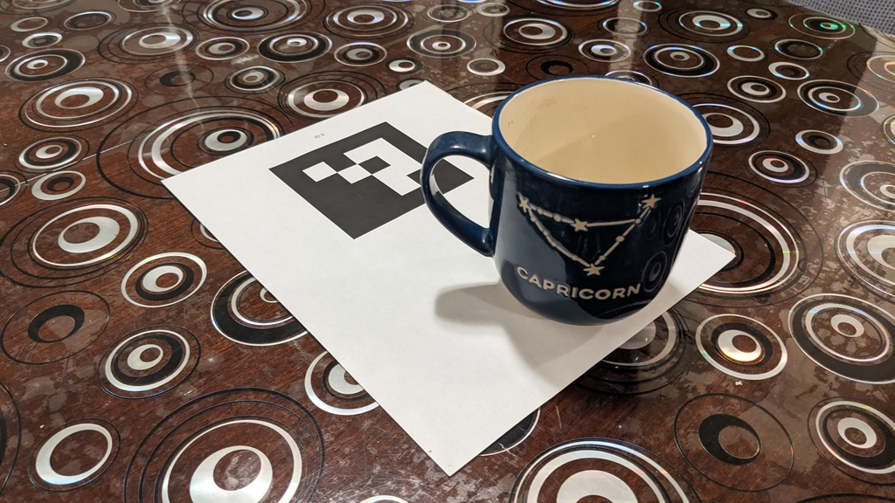
An example object photo
Part 0.3: Estimating Camera Pose
For each image, I estimated the camera's pose, which is the position and orientation, using the intrinsics and distortion coefficients calculated in Part 0.1.
This was done by detecting the ArUco tag like before, then using OpenCV's solvePNP.
I passed in the 2D pixel coordinates of all detected corners, their 3D coordinates, and the camera information from before.
Note that solvePNP returned the w2c (world to camera) transformation, so I had to invert this to obtani the c2w (camera to world) transformation.
I used Viser to visualize the camera poses. Below is a view of the visualization; the frustums represent the cameras, showing their positions, view directions, and the images they saw.
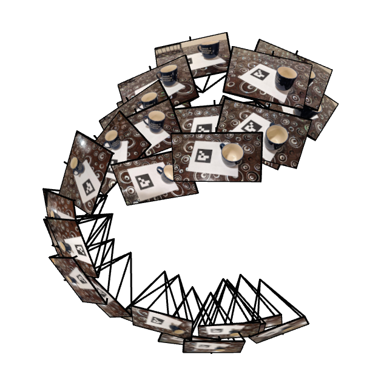
Viser Visualization
Part 1: Fit a Neural Field to a 2D Image
I implemented the MLP that was provided in the project specification.
This model takes in two inputs \(x, y\) representing the pixel value (normalized to be less than one) and outputs the RGB value at that point.
I used sinusoidal positional encoding to increase the number of inputs to \(4L + 2\), where \(L\) is the number of frequencies used for the encoding.
I computed the MSE loss between these predicted colors and true colors and used Adam to help update parameters (with a learning rate of \(0.01\)).
My best model had \(L = 12\) and a hidden layer dimension of \(256\), and ran for \(2000\) iterations.
Here are the final results of both images, compared to the original images.
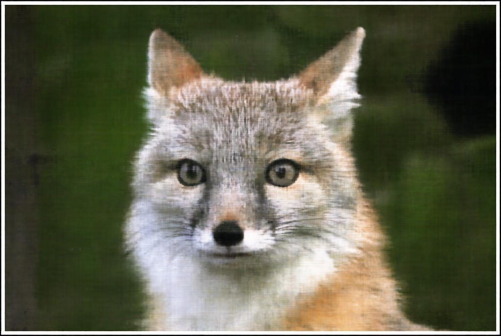
Fox Image Reconstruction
Fox Image Original
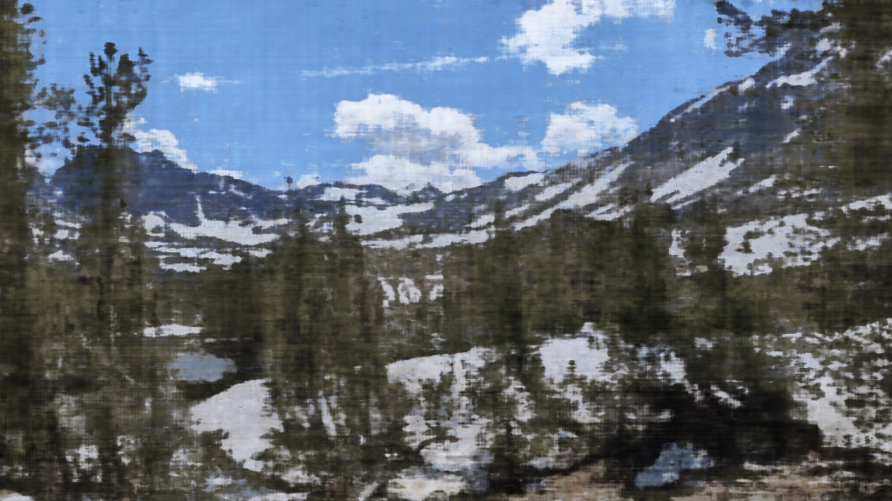
View Image Reconstruction
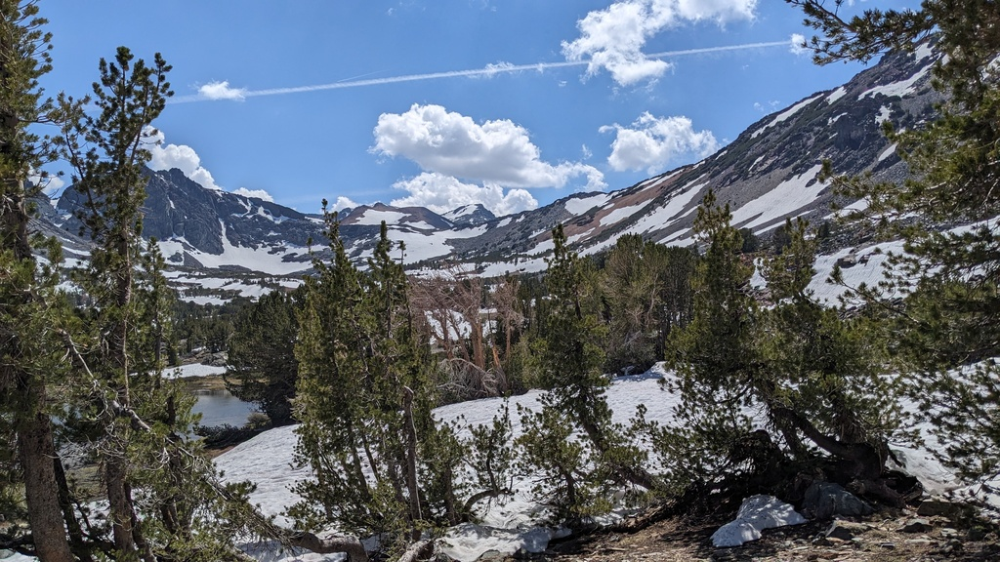
View Image Original
Below are the graphs of PSNR (Peak Signal-to-Noise Ratio) for the best models I trained. Recall that a higher PSNR corresponds to a better reconstruction.
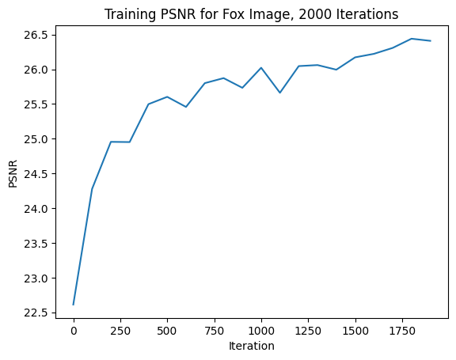
Fox Image PSNR
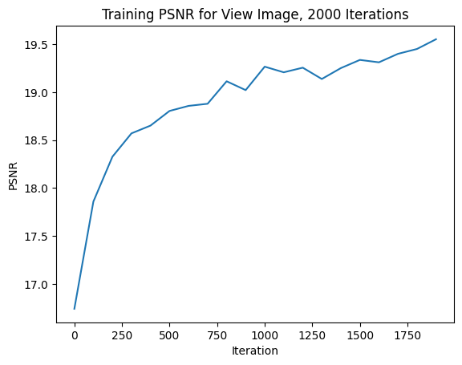
View Image PSNR
For the best model I trained for the fox image, here's a series of reconstructions of the image throughout the model's training. These results are at iterations 100, 200, 500, and 1000 for both the fox image and my personal image.
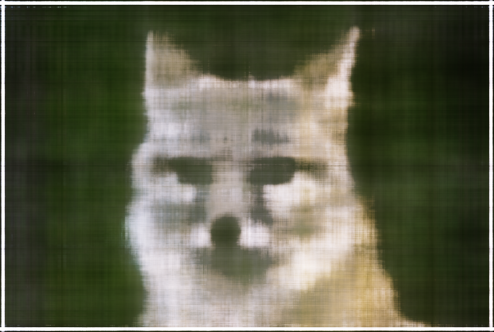
100 iterations
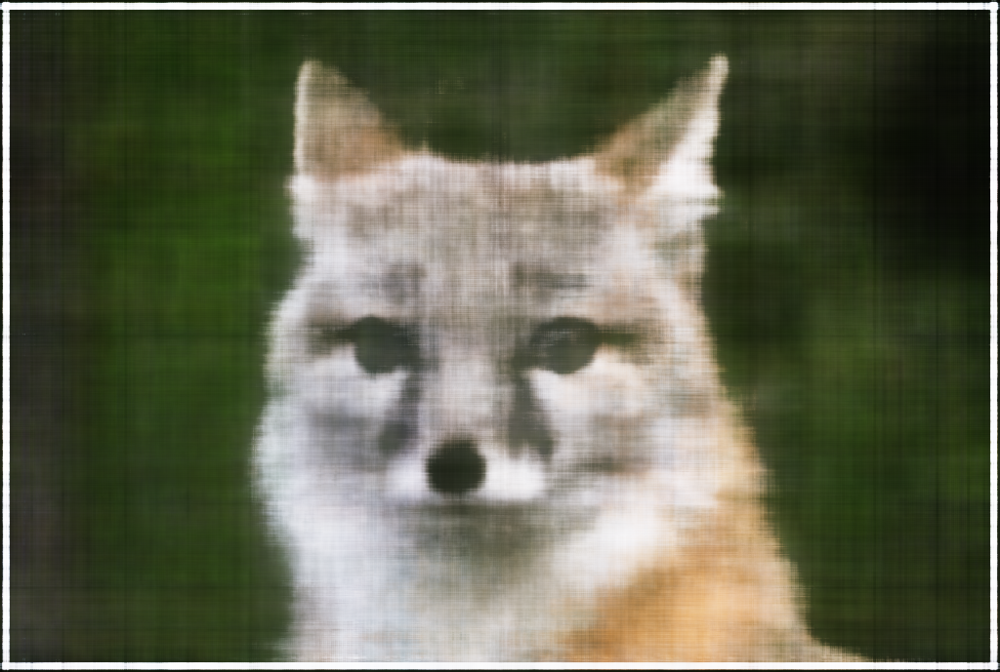
200 iterations
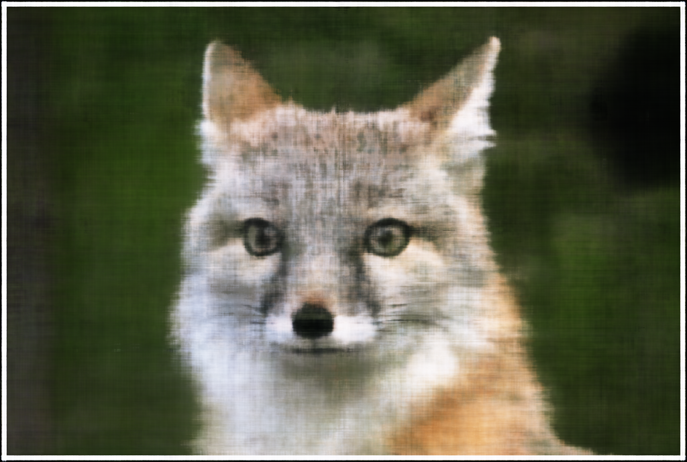
500 iterations
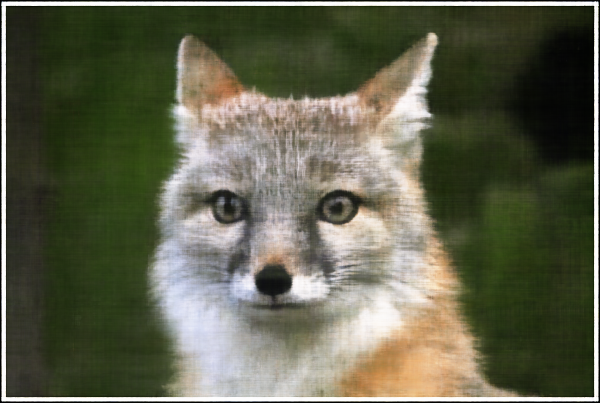
1000 iterations
Here's the same for the view image.
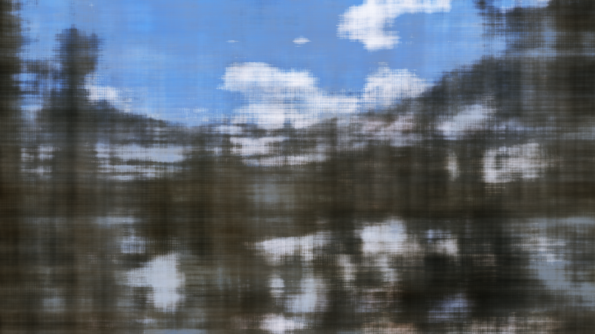
100 iterations
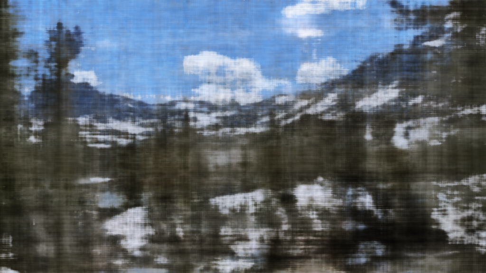
200 iterations
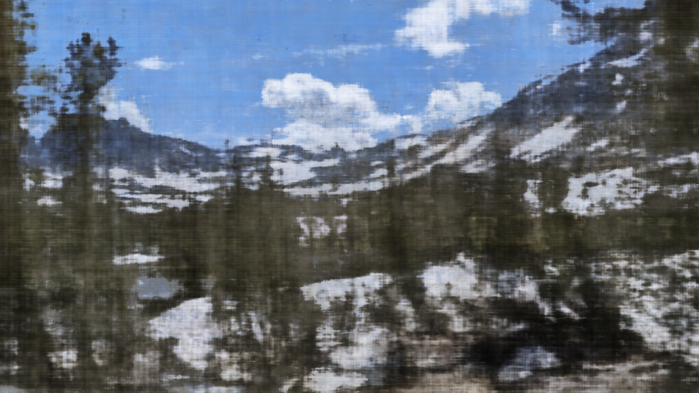
500 iterations
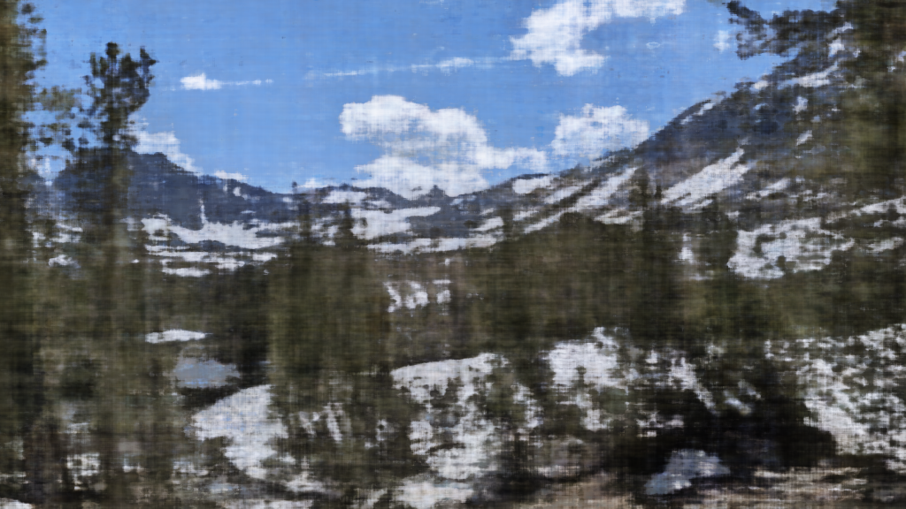
1000 iterations
Finally, here are the results of hyperparameter tuning for the fox image. I've displayed four models with all combinations \(L = 2, 12\) and \(D = 32, 256\), where \(D\) is the size of the hidden layer. These were all trained for 2000 iterations.
Notice that a higher \(L\) allows the model to capture higher frequencies, and increasing the hidden layer size improved the details.
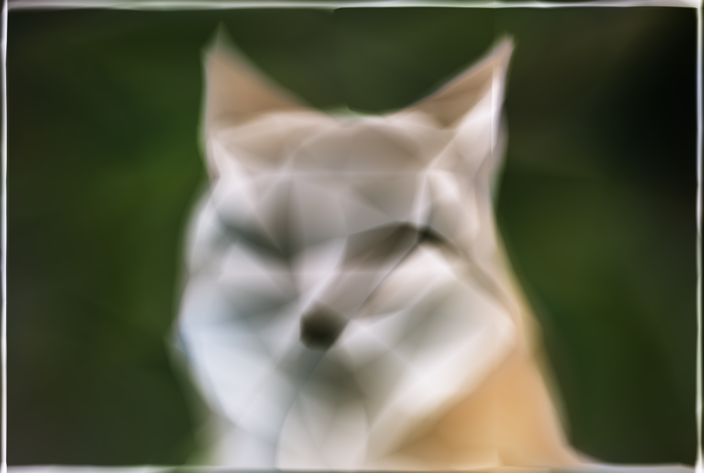
\(L = 2, D = 32\)
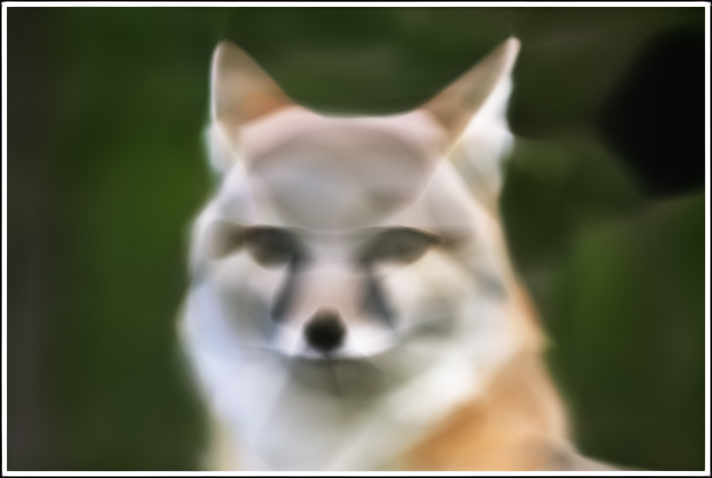
\(L = 2, D = 256\)
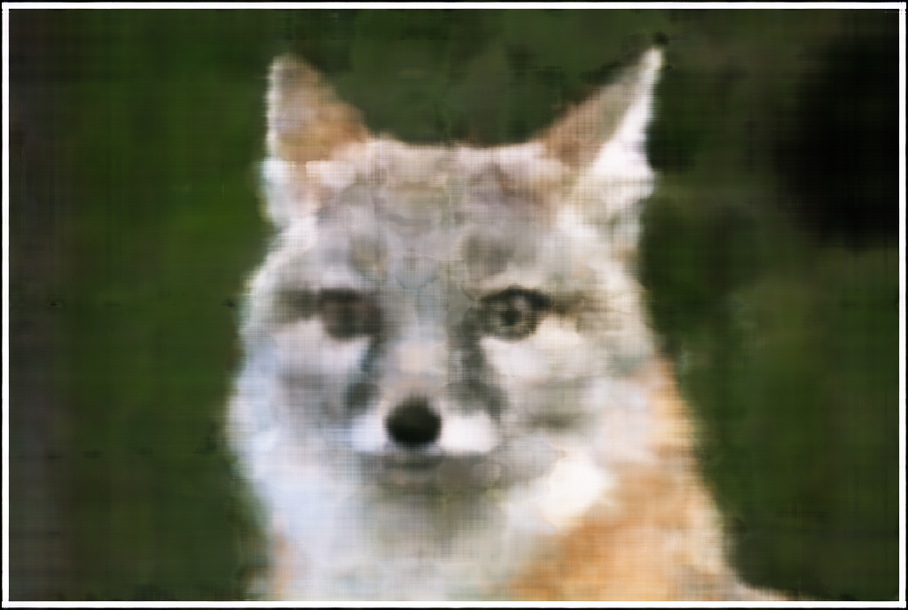
\(L = 12, D = 32\)
\(L = 12, D = 256\)
Part 2: Fit a Neural Radiance Field from Multi-view Images
I was unable to finish part 2. I got certain parts working (specifically parts of 2.1, 2.2, and 2.5) but had persistent bugs that made me unable to finish the rest. Below is an explanation of what I tried.
Part 2.1: Create Rays from Cameras
I wrote a method to convert from camera to world coordinates, which converted coordinates to homogenous coordinates and multiplied them by a c2w matrix.
I wrote a method to convert from pixel to 3D space camera coordinates, which converted coordinates to homogenous coordinates and multiplied them by the inverse of the intrinsic matrix and the depth.
I wrote a method to convert a pixel coordinate into a ray in 3D space, which cast out a pixel coordinate to a camera coordinate with depth 1, then computed the origin and direction of the corresponding ray.
I used batched operations for all of these.
Part 2.2: Sampling
I wrote code to generate a flattened coordinate grid of the image using Numpy's meshgrid and read the corresponding RGB color values (and camera numbers).
I wrote code to sample rays from the global pool of coordinates, using the previous pixel_to_ray method to obtain the corresponding rays.
I wrote code to sample random points along a given ray. For validation, these points would be sampled at uniform intervals from a specified near and far distance. For training, in order to prevent overfitting, I introduced random perturbations.
Part 2.4: Neural Radiance Field
The network architecture is similar to the one used in Part 1, but has a couple significant differences.
The input now takes in six values, instead of three: the 3D world coordinates \((x, y, z)\) and the 3D view direction \((d_x, d_y, d_z)\); but similarly to Part 1, these each input is encoded with sinusoidal positional encoding.
The output consists of four values: the pixel color \((R, G, B)\) and the density \(\sigma\).
As before, the pixel color is constrained to the interval \([0, 1]\) by a sigmoid activation, but density is constrained to a nonnegative value by a RELU activation.
Overall, the network is much deeper in order to handle the increased complexity.
Notably, most layers only have access to the world coordinates \((x, y, z)\), which travel through some dense layers, are re-concatenated at a middle layer, and ultimately decide the density output \(\sigma\).
The 3D view direction \((d_x, d_y, d_z)\) is only added to the network two layers prior to the prediction of the pixel color \((R, G, B)\); the viewing direction does not affect the density of a point.
Note that the network branches at the end, with the two branches predicting the density and color respectively.
Part 2.5: Volume Rendering
The volume rendering equation integrates the output density and pixel color from the NeRF along a given ray to produce the viewed pixel color.
This can be approximated using the discrete volume rendering function: \(\hat C(r) = \sum_i T_i (1 - \mathrm{exp}(-\sigma_i \delta_i))c_i\), where \(T_i = \prod_{j=1}^{i-1} \mathrm{exp}(- \sigma_j \delta_j)\) intuitively represents how much light the previous layers have let through.